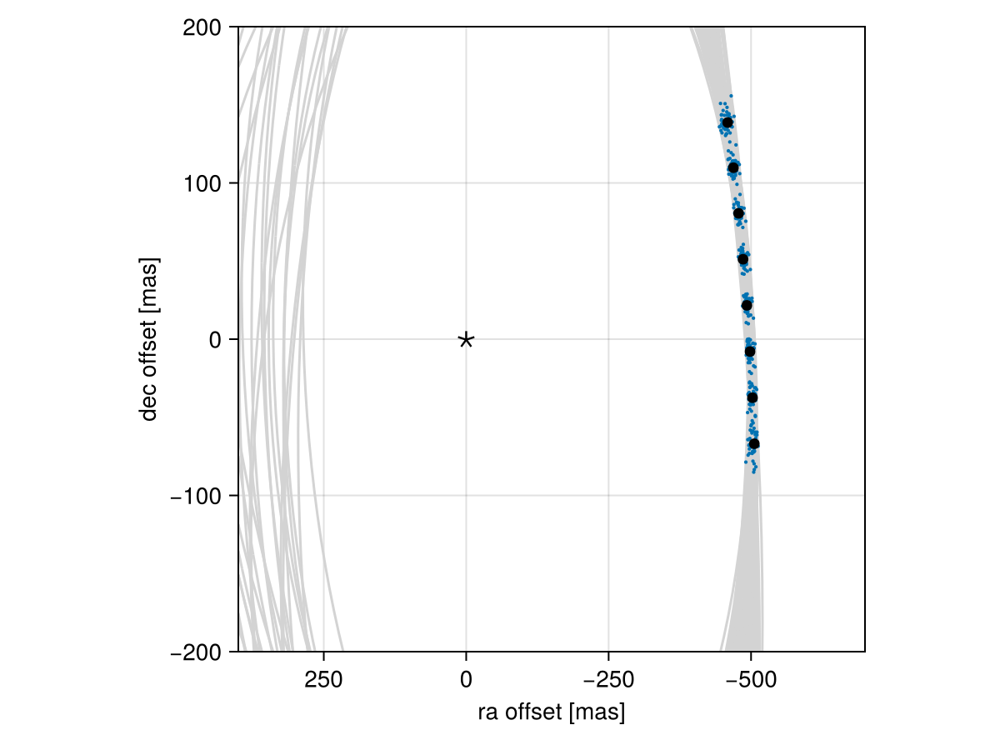
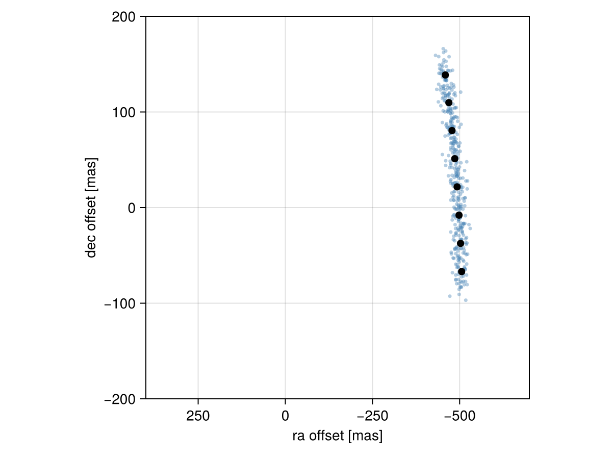
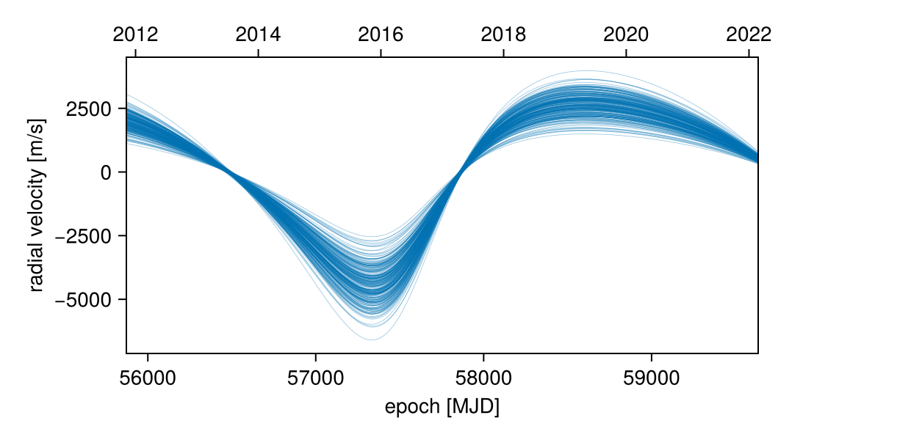
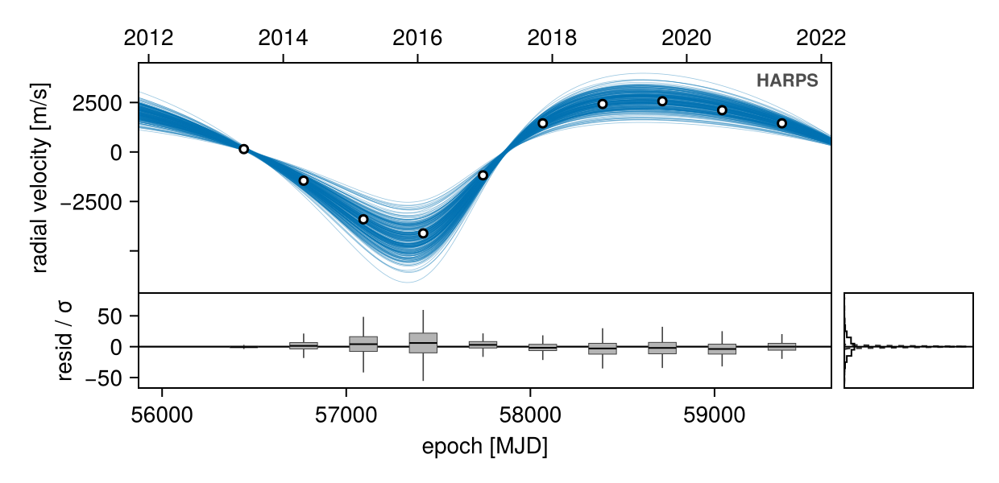
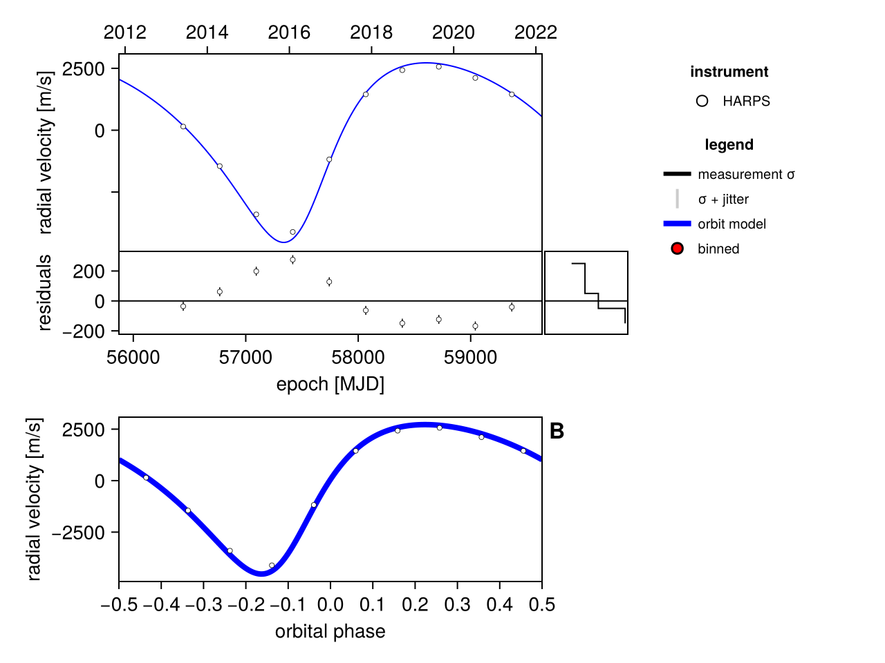
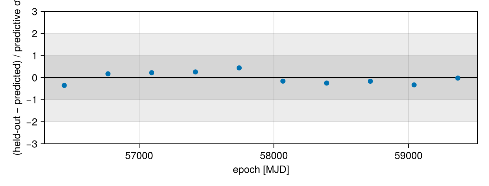

Posterior Predictive Checks
A posterior predictive check compares our true data with simulated data drawn from the posterior. This allows us to evaluate if the model is able to reproduce our observations appropriately. Samples drawn from the posterior predictive distribution should match the locations of the original data.
To demonstrate, we will fit a model to relative astrometry data:
using Octofitter
using Distributions
astrom_dat = Table(
epoch= [50000.,50120,50240,50360,50480,50600,50720,50840,],
ra = [-505.764,-502.57,-498.209,-492.678,-485.977,-478.11,-469.08,-458.896,],
dec = [-66.9298,-37.4722,-7.92755,21.6356, 51.1472, 80.5359, 109.729, 138.651,],
σ_ra = fill(10.0, 8),
σ_dec = fill(10.0, 8),
cor = fill(0.0, 8)
)
A = Body(
name="A",
variables=@variables begin
mass ~ truncated(Normal(1.2, 0.1), lower=0.1) # M⊙
end
)
b = Body(
name="b",
about=A,
variables=@variables begin
a ~ truncated(Normal(10, 4), lower=0.1, upper=100)
e ~ Uniform(0.0, 0.5)
i ~ Sine()
ω ~ UniformCircular()
Ω ~ UniformCircular()
θ ~ UniformCircular()
epoch = 50420.0 # reference epoch for θ. Choose an MJD date near your data.
end
)
astrom_obs = RelAstromObs(astrom_dat; target=b, ref=A, name="simulated astrom")
sys = System(
name="Tutoria",
bodies=[A, b],
observations=[astrom_obs],
variables=@variables begin
plx ~ truncated(Normal(50.0, 0.02), lower=0.1)
end
)
model = Octofitter.LogDensityModel(sys)
using Random
Random.seed!(0)
chain = octofit(model)Chains MCMC chain (1000×29×1 Array{Float64, 3}):
Iterations = 1:1:1000
Number of chains = 1
Samples per chain = 1000
Wall duration = 1.78 seconds
Compute duration = 1.78 seconds
parameters = plx, A_mass, b_a, b_e, b_i, b_ωx, b_ωy, b_Ωx, b_Ωy, b_θx, b_θy, b_ω, b_Ω, b_θ, b_epoch
internals = n_steps, is_accept, acceptance_rate, hamiltonian_energy, hamiltonian_energy_error, max_hamiltonian_energy_error, tree_depth, numerical_error, step_size, nom_step_size, is_adapt, loglike, logprior, logpost, tree_depth, numerical_error
Use `describe(chains)` for summary statistics and quantiles.
Where the model puts the planet
We now have our posterior as approximated by the MCMC chain. A posterior sample is a whole system, not a per-planet orbit object, so we rebuild one system per draw with construct_system and then query it with the usual PlanetOrbits functions:
# Instead of building a system for all rows in the chain, just pick
# every twentieth row.
ii = 1:20:1000
systems = [construct_system(model, chain, i) for i in ii]50-element Vector{PlanetOrbits.System{2, 1, Float64, PlanetOrbits.Parallax{Float64}, (:A, :b), @NamedTuple{}, 2}}:
System{2 bodies, 1 orbits, Float64}
System{2 bodies, 1 orbits, Float64}
System{2 bodies, 1 orbits, Float64}
System{2 bodies, 1 orbits, Float64}
System{2 bodies, 1 orbits, Float64}
System{2 bodies, 1 orbits, Float64}
System{2 bodies, 1 orbits, Float64}
System{2 bodies, 1 orbits, Float64}
System{2 bodies, 1 orbits, Float64}
System{2 bodies, 1 orbits, Float64}
System{2 bodies, 1 orbits, Float64}
System{2 bodies, 1 orbits, Float64}
System{2 bodies, 1 orbits, Float64}
System{2 bodies, 1 orbits, Float64}
System{2 bodies, 1 orbits, Float64}
System{2 bodies, 1 orbits, Float64}
System{2 bodies, 1 orbits, Float64}
System{2 bodies, 1 orbits, Float64}
System{2 bodies, 1 orbits, Float64}
System{2 bodies, 1 orbits, Float64}
System{2 bodies, 1 orbits, Float64}
System{2 bodies, 1 orbits, Float64}
System{2 bodies, 1 orbits, Float64}
System{2 bodies, 1 orbits, Float64}
System{2 bodies, 1 orbits, Float64}
System{2 bodies, 1 orbits, Float64}
System{2 bodies, 1 orbits, Float64}
System{2 bodies, 1 orbits, Float64}
System{2 bodies, 1 orbits, Float64}
System{2 bodies, 1 orbits, Float64}
System{2 bodies, 1 orbits, Float64}
System{2 bodies, 1 orbits, Float64}
System{2 bodies, 1 orbits, Float64}
System{2 bodies, 1 orbits, Float64}
System{2 bodies, 1 orbits, Float64}
System{2 bodies, 1 orbits, Float64}
System{2 bodies, 1 orbits, Float64}
System{2 bodies, 1 orbits, Float64}
System{2 bodies, 1 orbits, Float64}
System{2 bodies, 1 orbits, Float64}
System{2 bodies, 1 orbits, Float64}
System{2 bodies, 1 orbits, Float64}
System{2 bodies, 1 orbits, Float64}
System{2 bodies, 1 orbits, Float64}
System{2 bodies, 1 orbits, Float64}
System{2 bodies, 1 orbits, Float64}
System{2 bodies, 1 orbits, Float64}
System{2 bodies, 1 orbits, Float64}
System{2 bodies, 1 orbits, Float64}
System{2 bodies, 1 orbits, Float64}construct_system returns a PlanetOrbits.System carrying every body, and each observable takes an explicit (target, ref) pair — raoff(sol, :b, :A). That is what lets the same call express a companion measured against the host, against the barycentre, or against another companion.
Calculate and plot the location the planet would be at each observation epoch:
using CairoMakie
epochs = astrom_obs.table.epoch
x = Float64[]
y = Float64[]
for posys in systems
traj = orbitsolve(posys, epochs)
append!(x, raoff.(traj, :b, :A))
append!(y, decoff.(traj, :b, :A))
end
fig = Figure()
ax = Axis(
fig[1,1], xlabel="ra offset [mas]", ylabel="dec offset [mas]",
xreversed=true,
aspect=1
)
for posys in systems
Makie.lines!(ax, posys, :b, :A, color=:lightgrey)
end
Makie.scatter!(
ax,
x, y,
markersize=3,
)
Makie.scatter!(ax, astrom_obs.table.ra, astrom_obs.table.dec,color=:black, label="observed")
Makie.scatter!(ax, [0],[0], marker='⋆', color=:black, markersize=20,label="")
Makie.xlims!(400,-700)
Makie.ylims!(-200,200)
fig
Looks like a great match to the data! Notice how the uncertainty around the middle point is lower than the ends. That's because the orbit's posterior location at that epoch is also constrained by the surrounding data points. We can know the location of the planet in hindsight better than we could measure it!
Replicating the data, not just the orbit
The plot above shows the posterior over the model prediction. The posterior predictive distribution proper is the distribution over replicated data — model prediction plus measurement noise, p(ỹ | y) = ∫ p(ỹ | θ) p(θ | y) dθ. Octofitter can draw from it directly: take a posterior sample, hand it to generate_from_params with add_noise=true, and read the simulated table back off the returned system.
This works for any observation type in the model, not just astrometry, which is the reason to prefer it over hand-rolling the replication per data type:
Random.seed!(1)
fig = Figure()
ax = Axis(
fig[1,1], xlabel="ra offset [mas]", ylabel="dec offset [mas]",
xreversed=true, aspect=1
)
for i in 1:20:1000
θ = Octofitter.mcmcchain2result(model, chain, i)
rep = generate_from_params(sys, θ; add_noise=true)
tbl = rep.observations[1].table
Makie.scatter!(ax, tbl.ra, tbl.dec, color=(:steelblue, 0.4), markersize=5)
end
Makie.scatter!(ax, astrom_obs.table.ra, astrom_obs.table.dec, color=:black,
label="observed", markersize=10)
Makie.xlims!(400,-700)
Makie.ylims!(-200,200)
fig
The replicated points should scatter around the real ones with roughly the measurement uncertainty. If the real data sit systematically outside the replicated cloud, the model cannot reproduce them — that is the check.
Observations belong to the system, so the replicated data are at rep.observations[i], in the same order they were listed in System(...; observations=[...]).
You can follow this same procedure for any kind of data modelled with Octofitter. For a quantitative version of the same idea — how much each individual data point is influencing the fit — see Cross-Validation.
Predicting data the model never saw
Everything above compares the model against the data it was fitted to. A stronger check — and the one closest to how the model will actually be used — is to predict something the fit never saw, and then go and look.
Two features of Octofitter make this straightforward:
- Every observable is plottable, whether or not you observed it. What makes a panel is the model, not the dataset, so a fit to relative astrometry alone can draw the radial-velocity curve that orbit implies.
- An observation is just an object. You can build one, keep it out of the system you fit, and put it into a second system afterwards purely so that plots and residuals can see it. That second system is never sampled — it exists so the plotting layer has something to compare against.
We will do all three things in turn: predict a quantity with no data behind it, overlay held-out data on that prediction, and score the result. This is a good habit to build even when you have no data to hold out: "what does this fit predict for the observation I could take next?" is the same question.
A worked example
We will simulate a nearby binary — a 1.2 M⊙ star with a 0.35 M⊙ companion at 5 AU — measured with twelve epochs of relative astrometry and ten radial velocities. Both datasets come from the same truth, so we know what the answer should be. See Generating and Fitting Simulated Data for more on this machinery.
using Octofitter, Distributions, CairoMakie, Random
A = Body(name="A", variables=@variables begin
mass ~ truncated(Normal(1.20, 0.05), lower=0.1) # M⊙
end)
B = Body(name="B", about=A, variables=@variables begin
mass ~ Uniform(0.01, 1.0) # M⊙
a ~ Uniform(1.0, 20.0) # AU
e ~ Uniform(0.0, 0.9)
i ~ Sine() # rad
ω ~ Uniform(0, 2pi) # rad
Ω ~ Uniform(0, 2pi) # rad
θ ~ Uniform(0, 2pi) # rad, position angle at `epoch`
epoch = 57000.0 # MJD
end)
# Empty tables with the epochs and uncertainties we want simulated.
astrom_template = RelAstromObs(
Table(; epoch=range(mjd("2012-01-01"), mjd("2022-01-01"), length=12),
ra=zeros(12), dec=zeros(12),
σ_ra=fill(2.0, 12), σ_dec=fill(2.0, 12), cor=zeros(12));
target=B, ref=A, name="astrom")
rv_template = RadialVelocityObs(
Table(; epoch=range(mjd("2013-06-01"), mjd("2021-06-01"), length=10),
rv=zeros(10), σ_rv=fill(30.0, 10));
target=A, ref=Barycentre, name="HARPS")
sys_truth = System(name="Tutoria2", bodies=[A, B],
observations=[astrom_template, rv_template],
variables=@variables begin
plx ~ truncated(Normal(25.0, 0.05), lower=0.1) # mas
end)
Random.seed!(42)
θ_true = Octofitter.drawfrompriors(sys_truth; overrides=(;
plx = 25.0,
bodies = (;
A = (; mass = 1.20),
B = (; mass = 0.35, a = 5.0, e = 0.30, i = deg2rad(60),
ω = 0.6, Ω = 2.1, θ = 1.5),
),
))
sim = generate_from_params(sys_truth, θ_true; add_noise=true)
astrom_obs = sim.observations[1] # this goes into the fit
rv_obs = sim.observations[2] # this we hold back[ Info: [Tutoria2] observing_geometry = false (auto): worst accumulated bias 0.0506σ, 1.98× inside the 0.1σ limit — over 300 prior draws (seed 0xc70f177e5000001)
[ Info: [Tutoria2] barycentric_lighttime = false (auto): changes no prediction at all — over 300 prior draws (seed 0xc70f177e5000001)
[ Info: [Tutoria2] "HARPS": Einstein term, peak-to-peak [m/s] ≈ 0.0852 (0.00284× its tightest σ = 30.0)
[ Info: [Tutoria2] "HARPS": secular-acceleration drift, peak-to-peak [m/s] ≈ 0.0 (0.0× its tightest σ = 30.0)
[ Info: [Tutoria2] observing_geometry = false (user)
[ Info: [Tutoria2] barycentric_lighttime = false (user)Now fit only the astrometry. The radial velocities exist as an object in our session, but the system we sample knows nothing about them:
sys = System(name="Tutoria2", bodies=[A, B], observations=[astrom_obs],
variables=@variables begin
plx ~ truncated(Normal(25.0, 0.05), lower=0.1)
end)
model = Octofitter.LogDensityModel(sys)
Random.seed!(0)
initialize!(model, (; plx=25.0,
bodies=(; A=(; mass=1.2), B=(; mass=0.3, a=5.0, e=0.3))))
chain = octofit(model, iterations=1000)Chains MCMC chain (1000×24×1 Array{Float64, 3}):
Iterations = 1:1:1000
Number of chains = 1
Samples per chain = 1000
Wall duration = 0.37 seconds
Compute duration = 0.37 seconds
parameters = plx, A_mass, B_mass, B_a, B_e, B_i, B_ω, B_Ω, B_θ, B_epoch
internals = n_steps, is_accept, acceptance_rate, hamiltonian_energy, hamiltonian_energy_error, max_hamiltonian_energy_error, tree_depth, numerical_error, step_size, nom_step_size, is_adapt, loglike, logprior, logpost, tree_depth, numerical_error
Use `describe(chains)` for summary statistics and quantiles.
1. Plotting a quantity the model has no data for
octoplot's channels= keyword normally picks among the data channels a model has. Give it the name of an observable the model has no data for at all and it switches to prediction mode: the posterior model curves alone, with no points to overlay.
octoplot(model, chain; channels=radvel, show_sky=false)
That is the radial velocity of the host star about the system barycentre — the signal a spectrograph would measure — predicted by a fit that only ever saw sky positions. Nothing was added to the model to get it.
The observable name is enough because Octofitter knows which query a bare observable means (see default_queries and predictedchannels): "reflex" quantities like radvel, pmra and pmdec are drawn for each host body against the whole-system barycentre, while separation-like quantities (raoff, projectedseparation, ...) are drawn once per orbit, exterior side about interior side. So channels=pmdec on the same fit would predict the star's reflex proper motion instead.
Relative astrometry plus a parallax pins the total mass through Kepler's third law, but the radial-velocity amplitude depends on the companion's share of it. Here that share is the difference between a well-measured total (≈1.55 M⊙) and a primary mass known only from its 0.05 M⊙ prior — so the predicted amplitude carries a much larger fractional uncertainty than the orbit does. That is a real statement about the fit, not a plotting artefact, and it is exactly the sort of thing this figure is for: it tells you how much a single spectrum would buy you.
A body with mass = 0.0 (a common shortcut in astrometry-only tutorials) produces a reflex radial velocity of exactly zero. If you want to predict a reflex signal, give the companion a mass prior.
2. Overlaying data you held out
We have RVs in rv_obs that the fit never saw. To draw them against the prediction, build a second system that contains them and hand it the same chain:
sys_pred = System(name="Tutoria2", bodies=[A, B],
observations=[astrom_obs, rv_obs], # RVs added for plotting only
variables=@variables begin
plx ~ truncated(Normal(25.0, 0.05), lower=0.1)
end)
model_pred = Octofitter.LogDensityModel(sys_pred)
octoplot(model_pred, chain; channels=radvel, show_sky=false)
model_pred is never sampled. It exists so that the plotting layer — and Octofitter.residuals below — can evaluate the held-out observation under each posterior draw, using the likelihood's own arithmetic rather than a hand-rolled reimplementation. The draws are still the astrometry-only posterior; all that changed is that there is now something to compare them to.
The strip underneath shows, per epoch, the distribution of (data − model)/σ over the draws. It is many tens of σ wide because the prediction is much coarser than a 30 m/s measurement — see the score below for that number — but it is centred on zero, which is the thing to check.
The chain has one column per free variable of the model that produced it. If the held-out observation declares its own @variables (an RV offset, a jitter), model_pred has free variables the chain cannot supply, and you will get a MethodError: no method matching Float64(::Missing) when the plot tries to rebuild a draw.
So either leave the held-out observation's variables off, as here — the zero point is then fixed at 0, which is what our simulated data were generated with — or, if the real dataset has an unknown zero point, fit that one nuisance parameter separately rather than pretending the prediction covers it. A prediction of an RV curve whose offset you have not measured is a prediction of its shape, not of its absolute values.
3. Residuals, by eye and by number
For residuals in physical units, look at a single draw. Raw residuals are only well defined per draw — each carries its own jitters, offsets and trends — so rvplot is the right figure, and it also folds the signal on the orbit's period:
rvplot(model_pred, chain)
The residual strip is now in m/s. The points sit a few hundred m/s from the highest-posterior-density draw, in a coherent pattern rather than as scatter: the predicted shape is right and the predicted amplitude is slightly off, which is the mass-ratio uncertainty from before showing up in data space. Nothing here was fitted to these points.
To put a number on it, compute the log predictive density of each held-out point under the posterior — the standard "how surprised is the model by data it never saw" score. obscontext gives the evaluation context of an observation under one draw, and Octofitter.residuals returns the calibrated data, model, residual and effective uncertainty for each of its channels:
using Statistics
series = PosteriorSeries(model_pred, chain; N=200)
S = length(series)
# The likelihood's own residuals for the held-out RVs, under every draw.
res = [Octofitter.residuals(rv_obs, obscontext(series, rv_obs; draw=s)).rv for s in 1:S]
logmeanexp(x) = (m = maximum(x); m + log(mean(exp, x .- m)))
# log p(yₖ | y_astrom) ≈ log (1/S) Σₛ N(yₖ | modelₖₛ, σ_effₖₛ)
lpd = map(eachindex(rv_obs.table.epoch)) do k
logmeanexp([-0.5*(r.resid[k]/r.σ_eff[k])^2 - log(r.σ_eff[k]) - 0.5log(2π)
for r in res])
end
elpd = sum(lpd)-66.57648312455534A single number means little on its own, so quote it against two references you can write down in one line each: the score a model that hit every point exactly would get, and the score of the "no companion at all" null.
y, σ = rv_obs.table.rv, rv_obs.table.σ_rv
n = length(y)
best = sum(@. -log(σ) - 0.5log(2π)) # perfect prediction
null = sum(@. -0.5*(y/σ)^2 - log(σ) - 0.5log(2π)) # no companion
(; elpd, best, null,
per_point = elpd/n,
coarseness = exp((best - elpd)/n))(elpd = -66.57648312455534, best = -43.201359148668274, null = -29565.011629336263, per_point = -6.6576483124555335, coarseness = 10.355444267414775)Read that as: the astrometry-only fit predicts these radial velocities enormously better than "no companion" (tens of thousands of nats), and falls short of a perfect prediction by about 2.3 nats per point. When the residuals are small compared with the predictive width, that shortfall is just log(predictive σ / measurement σ) — so coarseness says the prediction is roughly ten times coarser than the measurements. The fit really does predict these data; it simply cannot predict them to 30 m/s, and now you know by how much.
Finally, the by-eye version of the same thing: each held-out point standardized by the total predictive spread (model spread across draws, plus measurement noise).
zs = map(eachindex(y)) do k
μ = mean(r.model[k] for r in res)
sd = sqrt(var(r.model[k] for r in res) + mean(r.σ_eff[k]^2 for r in res))
(y[k] - μ) / sd
end
fig = Figure(size=(680, 260))
ax = Axis(fig[1,1], xlabel="epoch [MJD]",
ylabel="(held-out − predicted) / predictive σ")
hspan!(ax, -2, 2, color=(:grey, 0.15))
hspan!(ax, -1, 1, color=(:grey, 0.2))
hlines!(ax, [0.0], color=:black)
scatter!(ax, collect(rv_obs.table.epoch), zs, markersize=10)
ylims!(ax, -3, 3)
fig
Every point lands inside 1σ of the prediction: the model passed. Do read this plot with its correlations in mind — these ten points are not ten independent tests, because a single error in the companion's mass moves all of them the same way, so a run of same-sign z-values is expected and a tight cluster near zero is not evidence that the predictive band is too wide.
The same three steps work for any pair of observation types, in either direction: predict astrometry from an RV fit, predict a Gaia along-scan signal from a fit to imaging, or hold out the last season of a long RV campaign and check that the rest of it saw the turnover coming. If instead you want to leave out each point in turn without refitting, that is Cross-Validation.